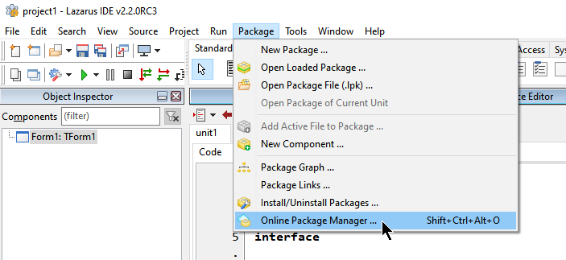
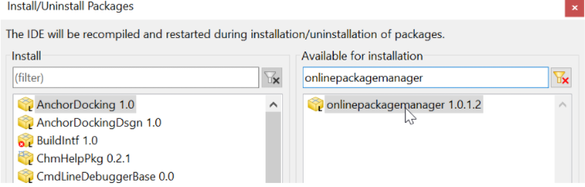

Em algumas instalações do Lazarus o ‘Online Package Manager’ (OPM ou GPO em português) já está instalado, no entanto, em versões compiladas usando o fpcupdeluxe o mesmo não é, vamos precisar dele, então veja lhe aparece no menu do Lazarus a opção Package|Online Package Manager:

Se ela já existe no seu sistema, então ignore as instruções a seguir, mas caso ela não exista é recomendado instalá-lo, vá em Packages|Install/Uninstall packages(Instalar/desinstalar pacotes) e selecione os seguintes pacotes para instalação:

Depois de adicionar os pacotes indicados clique em “Salvar e reconstruir IDE”.